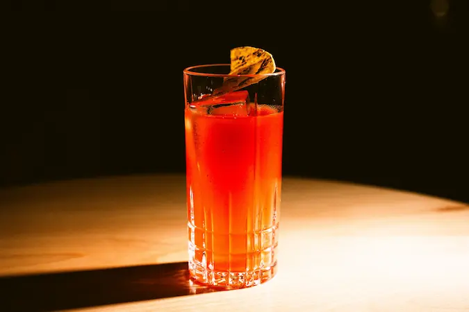

Monaco

Une boisson rafraîchissante à base de bière, de limonade et de grenadine.
★★★☆☆
Ingrédients
- 25 cl de bière blonde
- 10 cl de limonade
- 1 cl de sirop de grenadine
Préparation
- Verser la bière bien fraîche dans un grand verre.
- Ajouter la limonade.
- Verser le sirop de grenadine et servir sans trop mélanger.